ロードマップ#
本ページは、以下ロードマップ「ハンド」のガイドページです。
また、本ページは「smabo-esp32」のガイドを実施している前提で話を進めます。
概要#
本ページでは「ハンド機能」について解説します。

具体的には、以下の内容を実施します。
- ハンドのコントローラー制御
- ハンドのランダム制御
必要パーツ#
本機能の実装に必要なパーツを以下に記載します。
| 部品名 | 商品URL | 備考 |
|---|---|---|
| ESP32-DevKitC | link | 互換品でも可 |
| ブレッドボード（SAD101） |
link | 一般的なブレッドボードは5穴ですが、こちらは6穴になっています。 6穴でないとESP32のサイズ的に横幅が足りないので注意してください |
| ジャンプワイヤー | link | - |
| 電池ボックス（単3×4本、電池スナップ対応） | link | 電池スナップ対応の方が、取り回しが良いのでお勧めです。 |
| 電池スナップ（電池ボックス用） | link | コネクタピン付きの方が、ブレッドボードに差しやすくて、抜けにくいのでお勧めです。 |
| 充電式単三電池 × 4 | link | 充電式の方がおすすめです。 |
| 電池充電器 | link | - |
| サーボモータドライバ PCA9685 | link | 互換品でも可 |
| SG90 × 2 | link | 互換品でも良いですが、ホーンのサイズが純正と異なる場合は、パーツにうまくはまりません。 そのため、ホーンを削るか、3Dモデルの修正が発生する可能性があります。 |
パーツの印刷#
今回、新たに追加されるパーツを3Dプリンタで印刷します。
3Dプリンタは機種によって「印刷する際に使用するソフト」が異なるため、ここでは具体的な設定手順ではなく、ポイントのみを記載します。
以下のパーツを図の向きに設定して、印刷してください。
印刷の際の注意点
- パーツのつけ外しの際に、根本から折れにくくするため、凸部は横向きにして印刷
- サポート材は必ずONにした状態で印刷
- smabo-hardware/stl/hand/sg90/sg90_plate_1.stl × 2
左右で同じパーツを使用するため、2つ印刷します
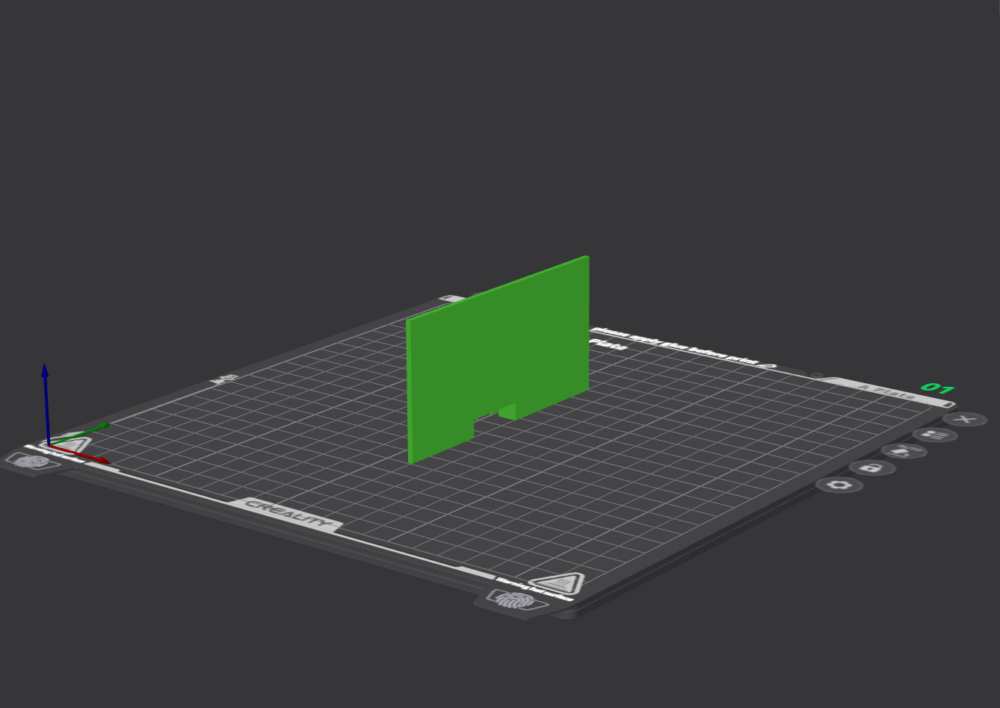
- smabo-hardware/stl/hand/sg90/sg90_plate_2.stl × 2
左右で同じパーツを使用するため、2つ印刷します
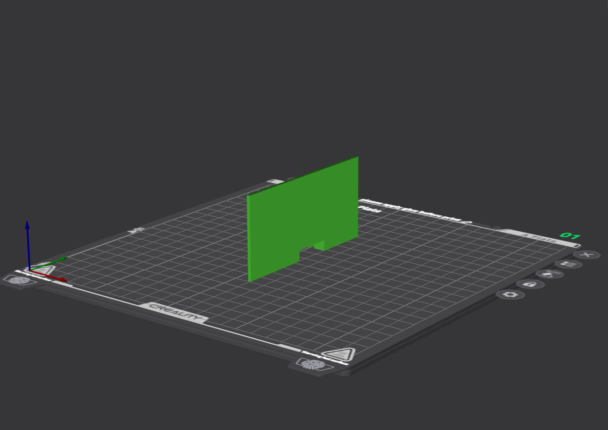
- smabo-hardware/stl/hand/sg90/sg90_base.stl × 2
左右で同じパーツを使用するため、2つ印刷します
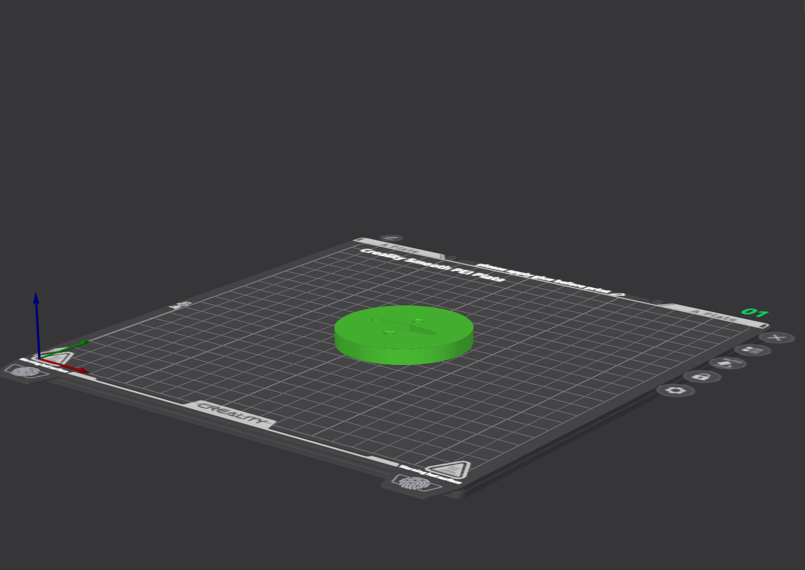
- smabo-hardware/stl/hand/sg90/arm_hand.stl × 2
左右で同じパーツを使用するため、2つ印刷します
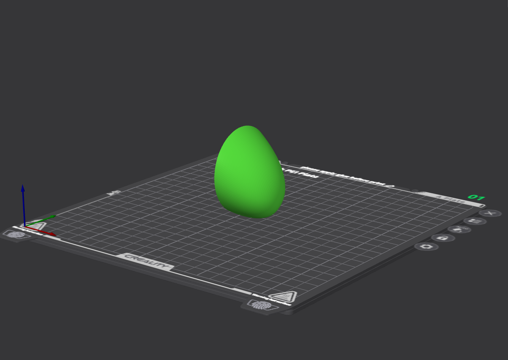
組み立て手順#
以下動画のように、必要パーツを組み立てます。
※ 動画には、前回までに印刷したパーツも含まれます
組み立ての際のポイント
組み立て動画では、SG90の取り付け手順は分からないため、以下に記載します。
最初に、下図のように「sg90_plate_1」と「sg90_plate_2」でsg90を固定し、ボディに取り付けます。
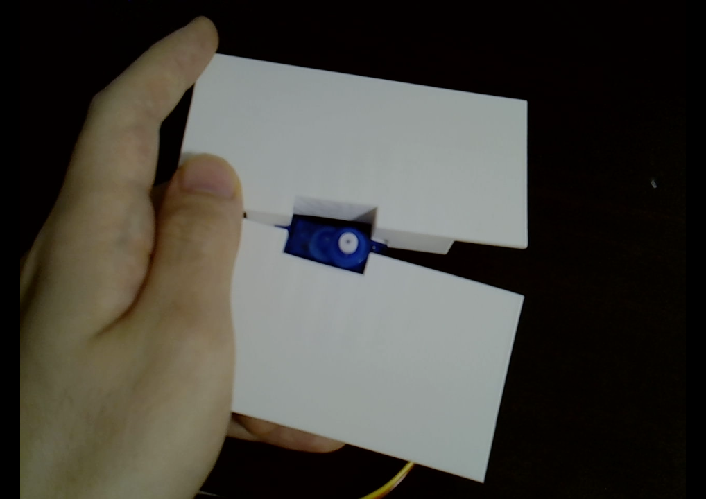
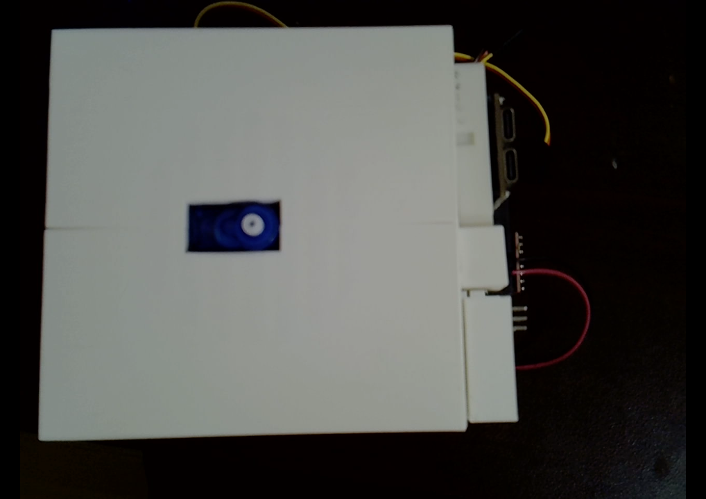
そして、sg90_baseを上から被せてホーンをはめ込みます（工具不要でも組み立て可能ですが、SG90に付属のネジでホーンとサーボを固定してもOKです）。
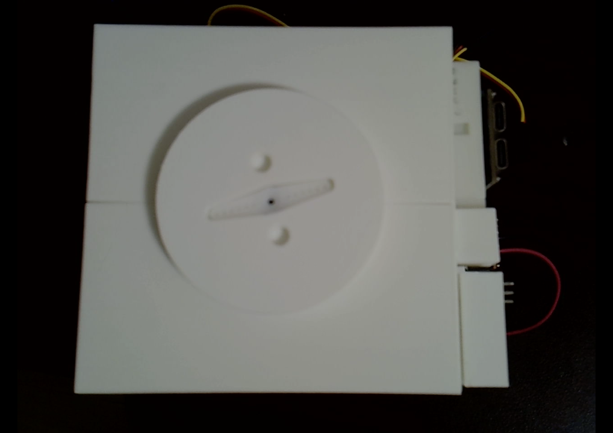
最後に、arm_handを取り付ければ完成です。
配線#
下記表の内容に従って、配線します。
※ 下記表において、「接続先1」と「接続先2」は、両者が回路的に直接繋がっていることを指します。
| 接続先1 | 接続先2 | 補足 |
|---|---|---|
| 乾電池バッテリーボックスの+極 | ブレッドボードの+極の右側 | 以降、右側を6V電圧として扱うため注意 |
| 乾電池バッテリーボックスの-極 | ブレッドボードの-極 | - |
| ESP32の5V電源 | ブレッドボードの+極の左側 | 以降、左側を5V電圧として扱うため注意 |
| ESP32のGND | ブレッドボードの-極 | - |
| PCA9685のV++ | ブレッドボードの＋極の右側 | - |
| PCA9685のVCC | ブレッドボードの＋極の左側 | - |
| PCA9685のSDA | config.jsonのi2c/sdaに設定されているピン |
- |
| PCA9685のSCL | config.jsonのi2c/sclに設定されているピン |
- |
| PCA9685のGND | ブレッドボードの-極 | - |
ESP32-DevKitCの場合の配線図は、以下になります。
※ デフォルト設定の場合、左腕のサーボをchannel=0, 右腕のサーボをchannel=1に接続してください。
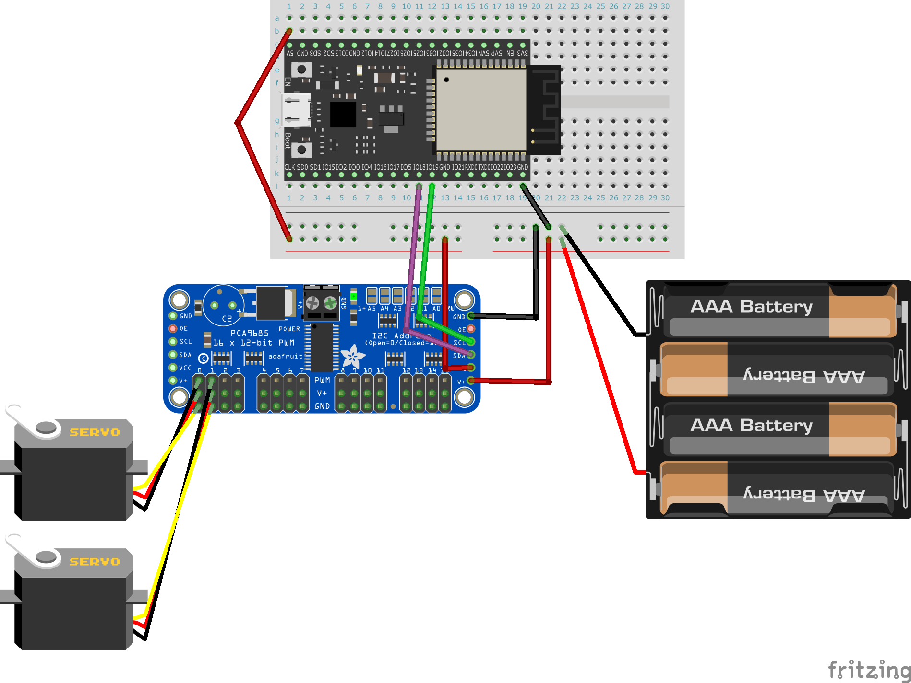
配線の際のポイント
SG90のケーブルは、smabo背面右下の隙間から通す形でPCA9685に接続してください
完成系#
今回作成したロボットの完成系は下図のようになります。
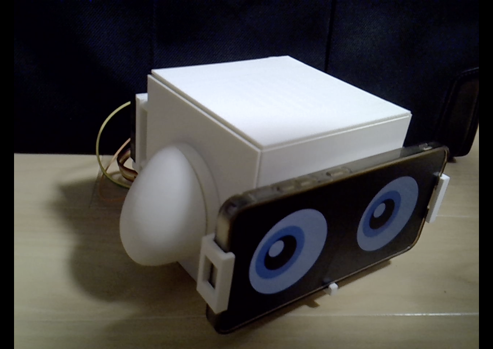
動作手順#
起動手順#
「こちらの起動手順」の内容を実行してください。
サーボ設定#
smabo-webの「Config」タブのModes/servosにて、各サーボの設定を変更可能です。
最初に、「ハンドの左右のサーボモータは反対方向についている」ため、回転方向を合わせるために、right_handのみinverseを有効にします。
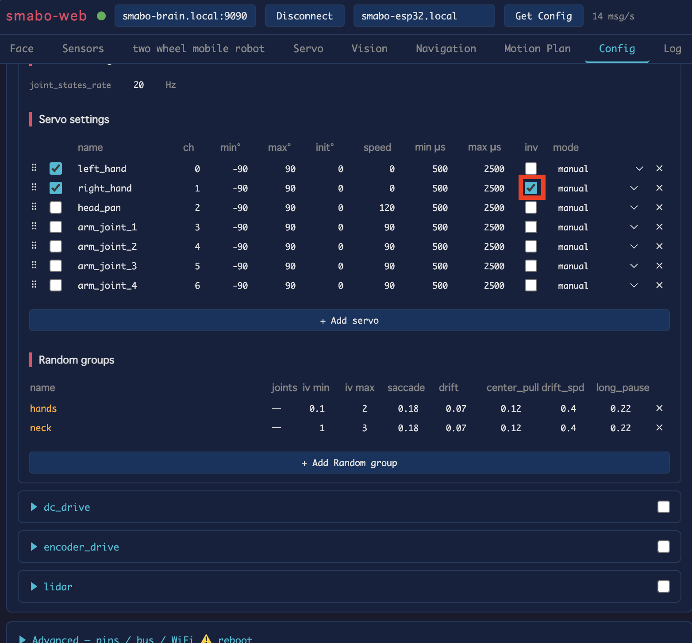
次に、left_hand, right_handを有効化します。
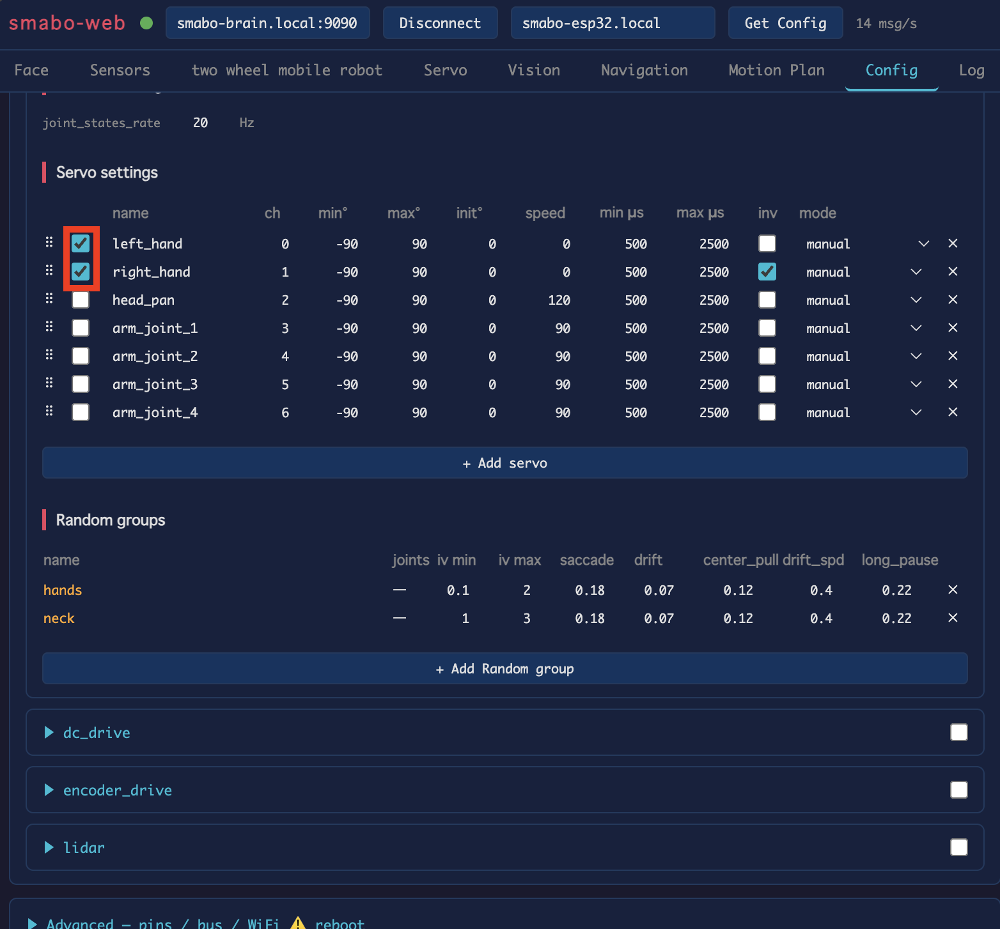
コントローラー制御#
コントローラー制御の手順を説明します。
modeを「manual」に設定してください。
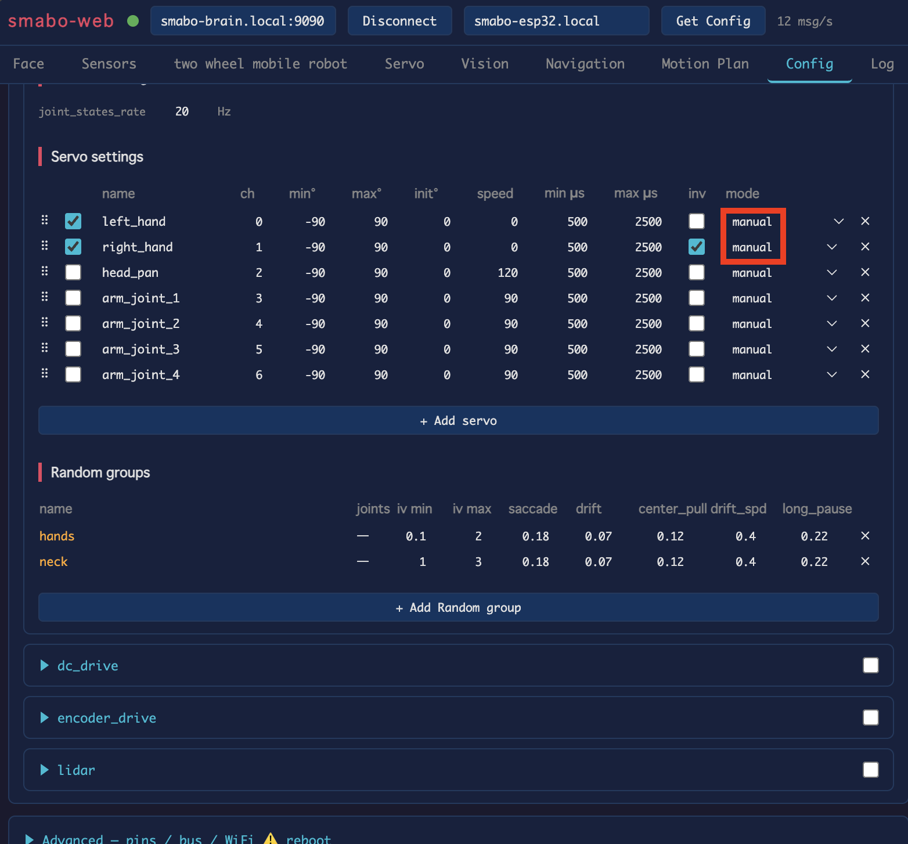
「Servo」タブで各サーボの角度を変更すると、それに合わせて左右の腕が動作します。

ランダム制御#
ランダム制御の手順を説明します。
modeを「random (hands)」に設定してください。
random_group
同じrandom_groupに設定されたサーボモーターは、同じタイミングでランダムに動作します。
逆に、左右のハンドを異なるタイミングでランダムに動かしたい場合は、left_hand, right_handそれぞれが別のrandom_groupに属するように設定してください。
なお、新規のrandom_groupは「Add random Group」をクリックすると、追加できます。
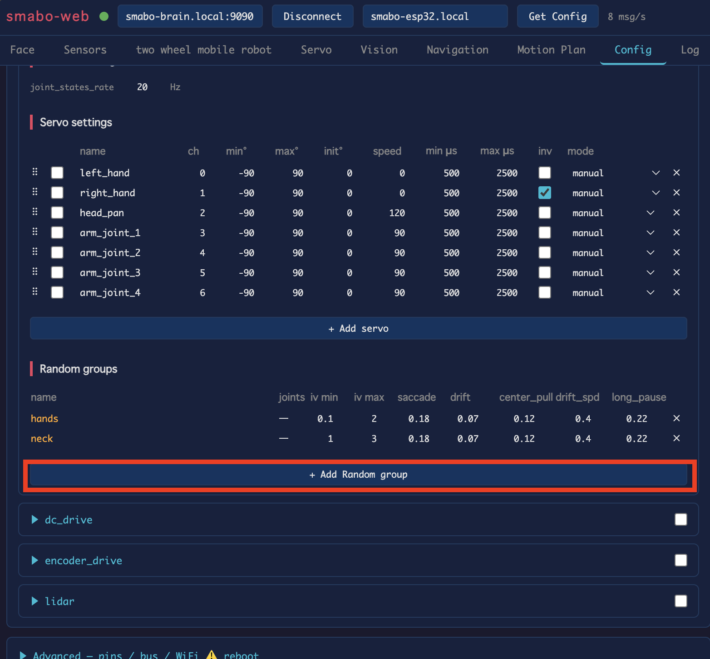
しばらく待つと、ランダムなタイミングで左右のハンドが動作することが確認できます。

次回#
本ページは、ロードマップの終端の1つです。
smaboには、他にも様々な機能があります。
他にも試したい機能がある場合は、ロードマップからお好きなページをご覧ください。